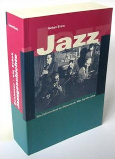

Hannover - ein Stück Jazzgeschichte

Das Buch "Hannover - ein Stück Jazzgeschichte" wurde in 2004 herausgegeben und ist leider ausverkauft!
Das Buch "Hannover - ein Stück Jazzgeschichte" wurde in 2004 herausgegeben und ist leider ausverkauft!
Dieses Buch soll ein Streifzug sein durch die hannoversche Jazz-Szene der 40er- bis 60er-Jahre. Teilweise unveröffentlichte Fotos und Zeitdokumente finden Sie in Wort und Bild. Die Ära nach dem Zweiten Weltkrieg war Zeit des Aufbruchs und der Neuorientierung. Die vorliegende Sammlung soll an längst Vergessenes erinnern und eine Würdigung für diejenigen sein, die ihrem Jazz treu geblieben sind und ihm stets neue Impulse gegeben haben.